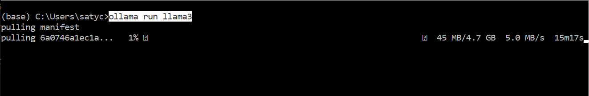
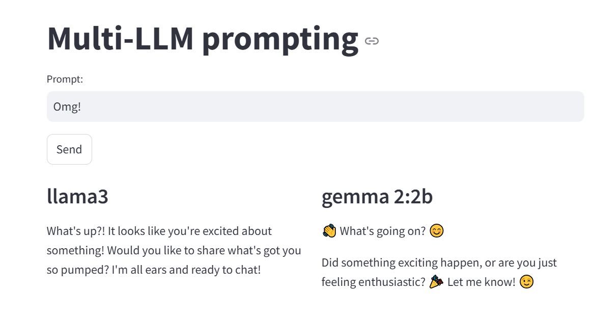

<!-- ********************************** -->
#### &nbsp;
# HW1: ER diagram construction, using LLMs :)
###In this HW, you are going to do this: create an ER diagram, using 'ollama' to locally (ie. on your laptop) run a pair of LLMs.
<div style="height:1px;border:1px solid #BBBBBB;"/>
###Install Ollama from https://ollama.com/ - it lets you download and run LLMs locally! After it's installed, do this [to install Meta's llama3 model] - <b>ollama run llama3</b>:
<br>
###Similarly, get 'gemma2:2b' [do 'ollama run' or 'ollama pull' on it].
###After both models are installed, you are ready to start sending prompts to them :)
###pip install these: streamlit, ollama, litellm
###Save the following as a .py (eg. invokeMultipleLLMs.py):
<pre style="font-size:15px;width:800px;">
import streamlit as st
from litellm import completion
# set up the Streamlit app
st.title("Multi-LLM prompting")
# create a text input for user messages
user_input = st.text_input("Prompt:")
if st.button("Send"):
if user_input:
messages = [{"role": "user", "content": user_input}]
# columns for side-by-side display
col1, col2 = st.columns(2)
# first
with col1:
st.subheader("llama3")
try:
response = completion(model="ollama/llama3", messages=messages)
st.write(response.choices[0].message.content)
except Exception as e:
st.error(f"Error: {str(e)}")
# second
with col2:
st.subheader("gemma 2:2b")
try:
response = completion(model="ollama/gemma2:2b", messages=messages)
st.write(response.choices[0].message.content)
except Exception as e:
st.error(f"Error: {str(e)}")
st.divider()
st.write("Exercise for later - install two more models from https://ollama.com/library [including https://ollama.com/library/llama2-chinese!], add two more columns above, put in code to send your prompt to FOUR LLMs and display their responses.")
st.divider()
else:
st.warning("Please enter a prompt.")
# information about the app
st.sidebar.title("About")
st.sidebar.write("This app, derived from https://github.com/Shubhamsaboo/awesome-llm-apps, shows how to invoke (multiple) LLMs via LiteLLM [https://docs.litellm.ai/] - FUN!")
st.sidebar.write(
"Aim - to create an ER diagram"
)
</pre>
###Run the program, by doing this: '<b>streamlit run invokeMultipleLLMs.py</b>' - that should pop up your default browser that will display the streamlit app :) Now you can put in prompts that are sent to both LLMs, and look at their outputs side by side - cool!
<br>
###Put in a prompt [for ER diagram creation - see below for details], and get a screenshot of the LLMs' outputs to the (same) prompt [similar to the screenshot above].
###Later you can download and run dozens/100s/1000s/1M+ (!) models from https://huggingface.co/models [or https://modelscope.cn], and experiment with (small scale) image, audio, video gen too [use the apps in https://huggingface.co/spaces as starting points].
<div style="height:1px;border:1px solid #BBBBBB;"/>
###Below is a description of the task, of ER diagram creation. 'Normally' you would create the diagram yourself - by coming up with the entities+columns, and relationships between them, and producing a visual output (the ER diagram) that captures DB design. But for this HW, you're using LLMs! So, use what's below to create a (long) prompt for the pair of LLMs. Examine both their outputs, pick what you believe is the better one [you don't need to submit two ER diagrams, just one].
###Also, ask for the ER diagram to be output in Mermaid format (a text format that's inspired by Markdown). You'll then copy and paste the Mermaid output from the LLM, into this Mermaid 'renderer' (diagram generator): https://mermaid.live/edit - this will produce a visual (diagram), which you'll save to disk, and submit. Make sure the Mermaid syntax looks like <a href="pics/MermaidJS.png">so.</a> You can also use https://www.mermaidflow.app/ [instead of https://mermaid.live] if you like, to produce the diagram.
###OK, here's the description...
###You (a database designer/analyst) have been hired by the owners of a small 'STEM' organization that is interested in offering programming courses in their community, during summer vacation [the classes will be aimed towards high school students who will be on summer break].
###Rather than offer just "the usual" (Scratch, Java, Python, Ruby...) coding classes, the owners want to make the classes more fun and engaging - they plan on making the classes be centered around <a href="https://www.google.com/search?q=microcontroller&rlz=1C1CHBF_enUS723US723&sxsrf=ACYBGNS3HHO-QjCoXCtF0zDz-h29WgDfgw:1568531457864&source=lnms&tbm=isch&sa=X&ved=0ahUKEwiRs_WCo9LkAhWFoJ4KHaKkCIcQ_AUIFCgD&biw=1280&bih=578">microcontrollers.</a> Students will take coding classes, and also work on hands-on projects (each class or project will last a week, the entire curriculum will last 6 weeks) that will have them run their code in a microcontroller (eg. like <a href="https://www.instructables.com/id/Physical-Computing-Scratch-for-Arduino/">so</a>).
###Below is what the owners have in mind - if their specifications seem incomplete, you are free (expected, in fact) to make relevant assumptions to help create your design [be sure to document them].
###Students will sign up for a mix of coding classes, and projects. Coding would be taught using Scratch, <a href="https://processing.org/">Processing</a>, Python, Java and JavaScript. Each project would be based on a microcontroller - Arduino, Raspberry Pi, BeagleBoard or micro:bit. Students pay a single flat fee at the beginning, for the entire curriculum.
###Instructors (faculty) would teach a variety of coding classes throughout the day, and also oversee projects when they are not teaching. Each coding class has a textbook. An instructor might specify a textbook for more than one class that he/she teaches (eg. the same <a href="https://www.amazon.com/Learning-Python-5th-Mark-Lutz/dp/1449355730">Python book</a> could be used for Python I and for Python II). A class would have multiple instructors, and each instructor could potentially use a different text (their favorite) for the same class (which those multiple instructors would teach).
###Instructors would get paid based on hours they teach, and hours they supervise projects (the supervision pays a higher rate); all instructors are paid identical rates.
###Projects are done in shared fashion, ie. as a group (typically containing 4 students who all sign up for a common project, eg. a '<a href="https://www.raspberrypi.org/magpi-issues/MagPi78.pdf">Building an arcade game using a Raspberry Pi</a>'). Students would sit around large, square, numbered tables (1,2..) assigned to them, to work on projects; at the start of the term, each table would be provided a big plastic storage box containing all the parts for the project the students will work on; at the end of the term, students will return all the parts presumably in good working order, otherwise they would be charged for damaged items.
###Each project would require parts specific to it - <a href="https://www.google.com/search?rlz=1C1CHBF_enUS723US723&biw=1280&bih=578&tbm=isch&sxsrf=ACYBGNSd1gSHCe6R4gGyDX7LKIFOKS6WTA%3A1568531853343&sa=1&ei=jeV9XcHKFPGt0PEPmpa8oAs&q=microcontroller+hardware+wheels%2C+motors%2C+sensors%2C+LEDs%2C+switches%2C+enclosures&oq=microcontroller+hardware+wheels%2C+motors%2C+sensors%2C+LEDs%2C+switches%2C+enclosures&gs_l=img.3...18979.23204..24027...0.0..0.81.898.12......0....1..gws-wiz-img.2P_6T4MnL3c&ved=0ahUKEwiBxb-_pNLkAhXxFjQIHRoLD7QQ4dUDCAc&uact=5">a microcontroller, and extra hardware such as wheels, motors, sensors, LEDs, switches, enclosures, etc.</a>
###The owners of the institution plan to order project parts from several online suppliers (such as <a href="https://www.sparkfun.com/">SparkFun</a>, <a href="https://www.adafruit.com/">adafruit</a> etc.) - there is expected to be multiple orders placed with multiple vendors, to procure all the items.
###There are several rooms that will be available for the classes and projects - students will be provided a schedule that will list where and when these will be.
###There is a small library that contains <a href="https://www.google.com/search?rlz=1C1CHBF_enUS723US723&sxsrf=ACYBGNSmLrAUZlMTge1WTjSqo2MF9B9AWg%3A1568531940255&ei=5OV9XbaQD9HB7gK1j4ToAQ&q=books+about+electronics+and+coding&oq=books+about+electronics+and+coding&gs_l=psy-ab.3...1409.3255..3928...0.2..0.105.616.6j1......0....1..gws-wiz.......0i71j33i10.XKSewr7EkNs&ved=0ahUKEwi2kvjopNLkAhXRoFsKHbUHAR0Q4dUDCAs&uact=5">books about electronics, coding</a>, etc. A student can check out up to 4 books at a time, which need to be returned in 2 weeks.
###At the end of the curriculum, students will be required to rate their instructors, courses, and projects, using a single score for each (one to five stars).
###The above is what the owners have planned! <b>Your task now is to (conceptually) design a good database for them, to help run their operation smoothly</b> - a cool task, pays well, but comes with heavy expectations that it work flawlessly from the get-go.
###Note that there isn't a single solution, or a single 'good' solution. You are free to make intelligent choices about what data (attributes) to store where (entities), and how to connect all the pieces (relations).
###Note too that some requirements stated above, might not be able to be captured in an ER diagram - this is fine. Be sure to document your design decisions (they would serve to provide rationale for "why you created your design the way you did").
<div style="height:1px;border:1px solid #BBBBBB;"/>
###Please post your qns (and their answers!) on the 'hw1' Piazza page.
###**What to submit** (as a single .zip):
####1. prompt and output - screenshot [doesn't need to contain the full prompt or full output]
####2. ER diagram
###**HAVE FUN!**
<div style="height:1px;border:1px solid #BBBBBB;"/>
<div style="height:1px;border:1px solid #BBBBBB;"/>
<!-- ********************************** -->